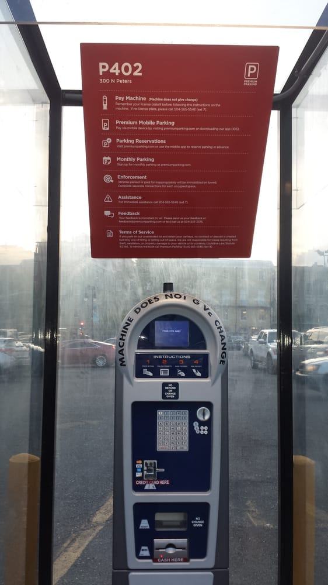
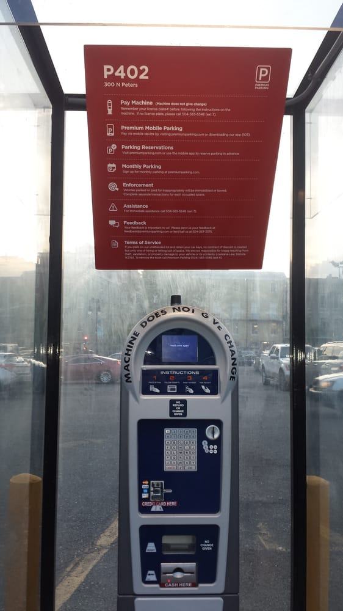

I want to respresent you my sponsers

Walk-On's Bistreaux And Bar
Walk-On's Bistreaux And Bar
There’s really no better way to describe the
uniqueness of Walk-On’s Sports Bistreaux.
We
start
every dish from scratch
and use fresh ingredients to bring our mouthwatering, Cajun cuisine to life. And whether
you’re
here for dinner with the
family, date night, cocktails with the girls or to watch a game on the big screen, we’re
always
happy to share our
Louisiana culture with you.


Louisiana Children's Museum
Louisiana Children's Museum
When you make a child’s potential visible,
wonderful things happen. So we created a
place
where
kids use play, shared
exploration, and conversation to connect with the people and world around them. A place
where
kids can be the amazing
humans they are. A place where wonderful things happen daily.


Premium Parking P402
Premium Parking P402
A lot of thinking goes in to every one of our spaces
before parkers do. Great people,
thoughtfully maintained
facilities, industry leading software. People, Places and Platform working together in
harmony.
We discovered that to create unparalleled customer experiences, we have to put the
customer
first and drive a mile in
their shoes.
Our solutions are custom built with our customers in mind. This drives enhanced
profitability
for our clients and takes
your asset from good to great.

 


Museum of Death
Museum of Death
The World Famous Museum of Death was founded in June,
1995
when JD Healy and Cathee
Shultz
decided to fill the void in
death education in this country and made death their life’s work.


Sheraton New Orleans Hotel
Sheraton New Orleans Hotel
On the historic Canal Street streetcar line
bordering the French Quarter, the hotel is
steps
from world-famous
restaurants, legendary nightlife, prime shopping and Harrah's Casino. Sheraton New
Orleans
Hotel
offers two restaurants
and a bar, a 24-hour fitness center, rooftop pool, expansive meeting space, amazing
downtown
and
river views and
Sheraton Sleep Experience Bed for a restful slumber.

Haunted Museum
Haunted Museum
We are social historians and storytellers whose goal is to
preserve the old traditions
of
New
Orleans that are in
jeopardy of being forgotten in Post Katrina and now Corona Virus times. As local New
Orleanians
and expert Mystics in
eclectic styles of magic we share both secret source information and a lifetime of
experience
direct with you. In our
House, the Bloody Mary family - we teach you History, Voodoo, hoodoo, paranormal, folk
magic,
swamp magic and
spiritualism. Expect a detailed presentation demonstrating the pioneering and legendary
avant-garde style that Bloody
Mary is so famous for.